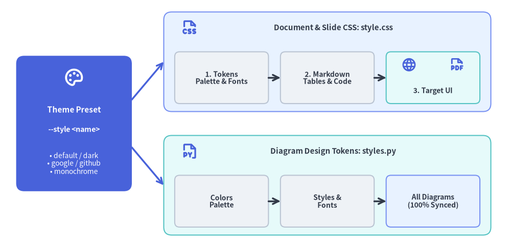
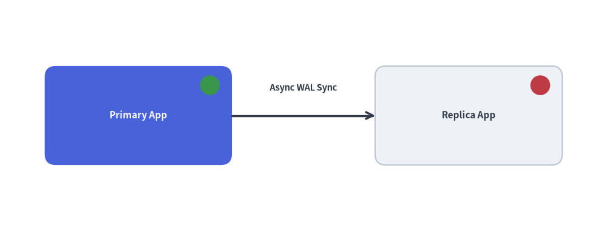

Customization & Theming: Templates, CSS & Injected Code
Drawlib is designed to integrate seamlessly into corporate design languages and custom developer workflows. You can customize HTML layout structures, modify stylesheets, and inject project-wide Python drawing helpers and style definitions.
A single theme preset (--style <preset>) synchronizes both your document CSS (style.css) and your diagram design tokens (styles.py):

Source Code
from drawlib.canvas import save, setup
from drawlib.icons import phosphor
from drawlib.lines import line
from drawlib.shapes import rectangle
from drawlib.styles import Styles
from drawlib.text import text
setup(width=128, height=62)
# Left Focal Card: Single Theme Preset
rectangle((18.5, 31), width=29, height=34, style=Styles.PrimaryFlat.patch(shape_r=2.0))
phosphor.palette((18.5, 42.5), width=5.2, style=Styles.WhiteBold)
text((18.5, 34.5), "Theme Preset", style=Styles.WhiteBold.patch(text_size=11.0))
text((18.5, 29.5), "--style <name>", style=Styles.WhiteBold.patch(text_size=10.2))
text((18.5, 21.0), "• default / dark\n• google / github\n• monochrome", style=Styles.White.patch(text_size=10.0))
# Branching connectors
line((33, 37), (41, 46.5), arrow_head="->", style=Styles.PrimaryBold)
line((33, 25), (41, 15.5), arrow_head="->", style=Styles.PrimaryBold)
# Top Branch: Document & Slide Styling (style.css)
rectangle((82, 46.5), width=82, height=25, style=Styles.PrimaryNeutral.patch(shape_r=2.0))
phosphor.file_css((47.5, 55.0), width=4.4, style=Styles.PrimaryBold)
text((83.5, 55.0), "Document & Slide CSS: style.css", style=Styles.DarkBold.patch(text_size=10.8))
rectangle(
(55.5, 42.5),
width=23.5,
height=13,
style=Styles.Neutral.patch(shape_r=1.2),
text="1. Tokens\nPalette & Fonts",
text_style=Styles.DarkBold.patch(text_size=10.0),
)
rectangle(
(82.0, 42.5),
width=23.5,
height=13,
style=Styles.Neutral.patch(shape_r=1.2),
text="2. Markdown\nTables & Code",
text_style=Styles.DarkBold.patch(text_size=10.0),
)
rectangle((108.5, 42.5), width=23.5, height=13, style=Styles.SecondaryNeutral.patch(shape_r=1.2))
phosphor.globe((102.5, 45.8), width=3.8, style=Styles.PrimaryBold)
phosphor.file_pdf((114.5, 45.8), width=3.8, style=Styles.PrimaryBold)
text((108.5, 39.2), "3. Target UI", style=Styles.DarkBold.patch(text_size=10.0))
line((67.25, 42.5), (70.25, 42.5), arrow_head="->", style=Styles.DarkBold)
line((93.75, 42.5), (96.75, 42.5), arrow_head="->", style=Styles.DarkBold)
# Bottom Branch: Diagram Canvas Styling (styles.py)
rectangle((82, 15.5), width=82, height=25, style=Styles.SecondaryNeutral.patch(shape_r=2.0))
phosphor.file_py((47.5, 24.0), width=4.4, style=Styles.PrimaryBold)
text((83.5, 24.0), "Diagram Design Tokens: styles.py", style=Styles.DarkBold.patch(text_size=10.8))
rectangle(
(55.5, 11.5),
width=23.5,
height=13,
style=Styles.Neutral.patch(shape_r=1.2),
text="Colors\nPalette",
text_style=Styles.DarkBold.patch(text_size=10.0),
)
rectangle(
(82.0, 11.5),
width=23.5,
height=13,
style=Styles.Neutral.patch(shape_r=1.2),
text="Styles &\nFonts",
text_style=Styles.DarkBold.patch(text_size=10.0),
)
rectangle(
(108.5, 11.5),
width=23.5,
height=13,
style=Styles.PrimaryNeutral.patch(shape_r=1.2),
text="All Diagrams\n(100% Synced)",
text_style=Styles.DarkBold.patch(text_size=10.0),
)
line((67.25, 11.5), (70.25, 11.5), arrow_head="->", style=Styles.DarkBold)
line((93.75, 11.5), (96.75, 11.5), arrow_head="->", style=Styles.DarkBold)
save()
1. Interactive Theming & Injection Tour
Scaffolding a project with -s <preset> (default, google, default-dark, monochrome) keeps your HTML/PDF/Slide stylesheet (style.css), injected Python design tokens (styles.py), reusable composite helpers (utils.py tracked by .drawlib/cache.db SHA-256 hashing), and Jinja2 template.html layout slots synchronized in lockstep:

Source Code
from __future__ import annotations
from drawlib.anim import Animation
from drawlib.canvas import save, setup
from drawlib.icons import code as code_icons
from drawlib.icons import phosphor
from drawlib.lines import line
from drawlib.shapes import circle, rectangle
from drawlib.smartarts import SourceCode, SourceCodeStyles
from drawlib.styles import Styles
from drawlib.text import text
W, H = 138.0, 82.0
setup(width=W, height=H)
anim = Animation(fps=10.0, loop=0)
CODE_TEXT_SIZE = 10.0
PT_TO_CANVAS = W / 720.0
FONT_CANVAS = CODE_TEXT_SIZE * PT_TO_CANVAS
LINE_H = FONT_CANVAS * 1.8
PAD_Y = FONT_CANVAS * 1.2
CODE_STYLES = SourceCodeStyles.get("default", font_lang="en", text_size=CODE_TEXT_SIZE).patch(
box_style=Styles.Neutral.patch(shape_fill_color=(0, 0, 0, 0), shape_line_width=0),
)
PANE_HEADER = Styles.Neutral.patch(
shape_fill_color=(238, 243, 250),
shape_line_color=(203, 213, 225),
shape_line_width=1.2,
shape_r=0.0,
)
EDITOR_BODY = Styles.Neutral.patch(
shape_fill_color=(250, 252, 255),
shape_line_color=(203, 213, 225),
shape_line_width=1.2,
shape_r=0.0,
)
TAKEAWAY_BODY = Styles.Neutral.patch(
shape_fill_color=(242, 246, 253),
shape_line_color=(203, 213, 225),
shape_line_width=1.2,
shape_r=0.0,
)
STUDIO_BODY = Styles.Neutral.patch(
shape_fill_color=(239, 243, 249),
shape_line_color=(203, 213, 225),
shape_line_width=1.2,
shape_r=0.0,
)
BROWSER_CARD = Styles.Neutral.patch(
shape_fill_color=(255, 255, 255),
shape_line_color=(180, 194, 214),
shape_line_width=1.3,
shape_r=1.2,
)
PART_ITEMS = [
("1. Theme Presets", "default, google & dark"),
("2. styles.py", "Tokens, Fonts & Custom"),
("3. utils.py", "Helpers & Cache Hash"),
("4. CSS & Template", "3-Layer CSS & Jinja2"),
]
def draw_step_bar(active_part: int) -> None:
"""Draw top 4-part progress bar (active_part is 1..4)."""
pill_w = 31.0
pill_h = 7.4
gap = 2.0
start_x = 4.0 + pill_w / 2.0
cy = 75.2
for idx, (label, sublabel) in enumerate(PART_ITEMS, start=1):
cx = start_x + (idx - 1) * (pill_w + gap)
if idx > 1:
prev_cx = cx - (pill_w + gap)
line(
(prev_cx + pill_w / 2.0 + 0.2, cy),
(cx - pill_w / 2.0 - 0.2, cy),
style=Styles.PrimaryBold if idx <= active_part else Styles.MutedThin,
)
if idx == active_part:
st = Styles.PrimaryFlat.patch(shape_r=1.4)
tst = Styles.WhiteBold.patch(text_size=10.3)
sub_tst = Styles.White.patch(text_size=9.5)
elif idx < active_part:
st = Styles.PrimaryNeutral.patch(shape_r=1.4, shape_line_width=1.1)
tst = Styles.PrimaryBold.patch(text_size=10.3)
sub_tst = Styles.Primary.patch(text_size=9.5)
else:
st = Styles.Neutral.patch(shape_r=1.4, shape_line_width=1.1)
tst = Styles.MutedBold.patch(text_size=10.3)
sub_tst = Styles.Muted.patch(text_size=9.5)
rectangle((cx, cy), width=pill_w, height=pill_h, style=st)
text((cx, cy + 1.35), label, style=tst)
text((cx, cy - 1.55), sublabel, style=sub_tst)
def draw_left_pane(
active_part: int,
file_label: str,
code_lang: str,
code_lines: list[str],
hl_range: tuple[int, int],
icon_fn: object,
summary_title: str,
summary_line1: str,
summary_line2: str,
) -> None:
"""Draw left source editor + bottom concept takeaway card."""
x0, w = 4.0, 63.5
cx = x0 + w / 2.0
top_y = 63.2
header_h = 5.4
editor_h = 43.8
takeaway_h = 15.8
rectangle((cx, top_y + header_h / 2.0), width=w, height=header_h, style=PANE_HEADER)
if code_lang == "python":
code_icons.python((x0 + 3.6, top_y + header_h / 2.0), width=3.4, style=Styles.Neutral)
elif code_lang == "css":
code_icons.css3((x0 + 3.6, top_y + header_h / 2.0), width=3.4, style=Styles.Neutral)
elif code_lang == "html":
code_icons.html5((x0 + 3.6, top_y + header_h / 2.0), width=3.4, style=Styles.Neutral)
else:
code_icons.bash((x0 + 3.6, top_y + header_h / 2.0), width=3.4, style=Styles.Neutral)
text(
(x0 + 6.5, top_y + header_h / 2.0),
file_label,
style=Styles.DarkBold.patch(text_size=10.2, halign="left"),
)
text(
(x0 + w - 2.6, top_y + header_h / 2.0),
f"Part {active_part} / 4",
style=Styles.PrimaryBold.patch(text_size=9.8, halign="right"),
)
rectangle((cx, top_y - editor_h / 2.0), width=w, height=editor_h, style=EDITOR_BODY)
hl_start, hl_end = hl_range
hl_top = top_y - PAD_Y - hl_start * LINE_H
hl_bot = top_y - PAD_Y - (hl_end + 1) * LINE_H
hl_cy = (hl_top + hl_bot) / 2.0
hl_h = hl_top - hl_bot
rectangle(
(cx, hl_cy),
width=w - 0.6,
height=hl_h,
style=Styles.Neutral.patch(shape_fill_color=(229, 239, 255), shape_line_width=0),
)
rectangle(
(x0 + 0.55, hl_cy),
width=0.9,
height=hl_h,
style=Styles.PrimaryFlat.patch(shape_line_width=0),
)
SourceCode.draw(
xy=(x0, top_y),
width=w,
code="\n".join(code_lines),
styles=CODE_STYLES,
code_lang=code_lang,
show_linenum=True,
align="top_left",
)
take_cy = 3.6 + takeaway_h / 2.0
rectangle((cx, take_cy), width=w, height=takeaway_h, style=TAKEAWAY_BODY)
circle(
(x0 + 6.4, take_cy),
radius=3.3,
style=Styles.PrimaryNeutral.patch(shape_line_width=1.2),
)
icon_fn((x0 + 6.4, take_cy), width=3.8, style=Styles.PrimaryBold) # type: ignore[operator]
text(
(x0 + 11.4, take_cy + 3.6),
summary_title,
style=Styles.DarkBold.patch(text_size=10.4, halign="left"),
)
text(
(x0 + 11.4, take_cy - 0.2),
summary_line1,
style=Styles.Dark.patch(text_size=9.7, halign="left"),
)
text(
(x0 + 11.4, take_cy - 3.8),
summary_line2,
style=Styles.PrimaryBold.patch(text_size=9.6, halign="left"),
)
def draw_theme_studio(param_badge: str, footer_caption: str) -> float:
"""Draw right synchronized page + diagram preview shell and footer."""
x0, w = 70.0, 64.0
cx = x0 + w / 2.0
top_y = 63.2
header_h = 5.4
body_h = 59.6
rectangle((cx, top_y + header_h / 2.0), width=w, height=header_h, style=PANE_HEADER)
phosphor.palette((x0 + 3.6, top_y + header_h / 2.0), width=3.4, style=Styles.Primary)
text(
(x0 + 6.5, top_y + header_h / 2.0),
"Synced Page + Diagram",
style=Styles.DarkBold.patch(text_size=10.2, halign="left"),
)
text(
(x0 + w - 2.4, top_y + header_h / 2.0),
param_badge,
style=Styles.PrimaryBold.patch(text_size=9.6, halign="right"),
)
rectangle((cx, 3.6 + body_h / 2.0), width=w, height=body_h, style=STUDIO_BODY)
rectangle(
(cx, 7.8),
width=59.2,
height=5.2,
style=Styles.Neutral.patch(
shape_fill_color=(255, 255, 255),
shape_line_color=(203, 213, 225),
shape_line_width=1.1,
shape_r=2.4,
),
text=footer_caption,
text_style=Styles.DarkBold.patch(text_size=9.7),
)
return cx
def draw_sub_pills(scx: float, labels: list[str], active_idx: int) -> None:
"""Draw 3-step tracker pills near the top of the right studio pane."""
pw, ph, pgap = 18.4, 4.2, 1.2
p_start = scx - (3 * pw + 2 * pgap) / 2.0 + pw / 2.0
for idx, lbl in enumerate(labels):
px = p_start + idx * (pw + pgap)
if idx == active_idx:
pst = Styles.PrimaryFlat.patch(shape_r=1.2)
ptst = Styles.WhiteBold.patch(text_size=9.5)
elif idx < active_idx:
pst = Styles.PrimaryNeutral.patch(shape_r=1.2, shape_line_width=1.0)
ptst = Styles.PrimaryBold.patch(text_size=9.5)
else:
pst = Styles.Neutral.patch(shape_r=1.2, shape_line_width=1.0)
ptst = Styles.Muted.patch(text_size=9.5)
rectangle((px, 59.0), width=pw, height=ph, style=pst, text=lbl, text_style=ptst)
def draw_browser_preview(
scx: float,
url_label: str,
*,
page_bg: tuple[int, int, int] = (255, 255, 255),
sidebar_bg: tuple[int, int, int] = (244, 247, 252),
chrome_bg: tuple[int, int, int] = (234, 240, 248),
border_col: tuple[int, int, int] = (180, 194, 214),
accent_col: tuple[int, int, int] = (59, 130, 246),
second_col: tuple[int, int, int] = (16, 185, 129),
ink_col: tuple[int, int, int] = (30, 41, 59),
card_bg: tuple[int, int, int] = (248, 250, 252),
node2_bg: tuple[int, int, int] = (232, 244, 253),
heading_txt: str = "System Overview",
node1_txt: str = "Gateway",
node2_txt: str = "Core DB",
hero_r: float = 1.0,
) -> None:
"""Draw mini browser card with synced HTML sidebar/heading + embedded diagram."""
bw, bh, bcy = 55.6, 36.6, 35.0
bx0, by0 = scx - bw / 2.0, bcy - bh / 2.0
by1 = by0 + bh
rectangle(
(scx, bcy),
width=bw,
height=bh,
style=Styles.Neutral.patch(
shape_fill_color=page_bg,
shape_line_color=border_col,
shape_line_width=1.3,
shape_r=1.2,
),
)
# Top browser bar
ch_h = 4.6
rectangle(
(scx, by1 - ch_h / 2.0),
width=bw,
height=ch_h,
style=Styles.Neutral.patch(
shape_fill_color=chrome_bg,
shape_line_color=border_col,
shape_line_width=1.1,
shape_r=0.4,
),
)
for d_i, d_c in enumerate([(239, 68, 68), (245, 158, 11), (16, 185, 129)]):
circle((bx0 + 2.8 + d_i * 2.2, by1 - ch_h / 2.0), radius=0.65, style=Styles.Neutral.patch(shape_fill_color=d_c, shape_line_width=0))
text((bx0 + 10.2, by1 - ch_h / 2.0), url_label, style=Styles.DarkBold.patch(text_color=ink_col, text_size=9.5, halign="left"))
# Left HTML sidebar
sb_w = 14.2
sb_h = bh - ch_h
rectangle(
(bx0 + sb_w / 2.0, by0 + sb_h / 2.0),
width=sb_w,
height=sb_h,
style=Styles.Neutral.patch(
shape_fill_color=sidebar_bg,
shape_line_color=border_col,
shape_line_width=1.0,
shape_r=0.0,
),
)
rectangle(
(bx0 + sb_w / 2.0, by1 - ch_h - 4.4),
width=11.6,
height=4.4,
style=Styles.Neutral.patch(shape_fill_color=accent_col, shape_line_width=0, shape_r=0.8),
text="Overview",
text_style=Styles.WhiteBold.patch(text_size=9.5),
)
text((bx0 + sb_w / 2.0, by1 - ch_h - 10.2), "API Guide", style=Styles.Muted.patch(text_size=9.5))
text((bx0 + sb_w / 2.0, by1 - ch_h - 15.2), "CLI & CSS", style=Styles.Muted.patch(text_size=9.5))
# Right HTML article + Embedded Drawlib Diagram Card
art_x0 = bx0 + sb_w
art_cx = art_x0 + (bw - sb_w) / 2.0
text(
(art_x0 + 2.6, by1 - ch_h - 4.0),
heading_txt,
style=Styles.DarkBold.patch(text_color=ink_col, text_size=10.2, halign="left"),
)
line(
(art_x0 + 2.6, by1 - ch_h - 7.2),
(art_x0 + 28.0, by1 - ch_h - 7.2),
style=Styles.Neutral.patch(line_color=accent_col, line_width=1.8),
)
# Embedded Drawlib figure card inside HTML page
fig_cy = by0 + 11.4
rectangle(
(art_cx, fig_cy),
width=36.8,
height=18.2,
style=Styles.Neutral.patch(
shape_fill_color=card_bg,
shape_line_color=border_col,
shape_line_width=1.1,
shape_r=1.0,
),
)
n1_cx, n2_cx = art_cx - 9.4, art_cx + 9.6
rectangle(
(n1_cx, fig_cy + 1.0),
width=13.6,
height=9.4,
style=Styles.Neutral.patch(shape_fill_color=accent_col, shape_line_width=0, shape_r=hero_r),
text=node1_txt,
text_style=Styles.WhiteBold.patch(text_size=9.6),
)
rectangle(
(n2_cx, fig_cy + 1.0),
width=13.6,
height=9.4,
style=Styles.Neutral.patch(
shape_fill_color=node2_bg,
shape_line_color=second_col,
shape_line_width=1.4,
shape_r=1.0,
),
text=node2_txt,
text_style=Styles.DarkBold.patch(text_color=ink_col, text_size=9.6),
)
line(
(n1_cx + 6.9, fig_cy + 1.0),
(n2_cx - 6.9, fig_cy + 1.0),
arrow_head="->",
style=Styles.PrimaryBold.patch(line_color=accent_col, line_width=1.5),
)
text(
(art_cx, fig_cy - 6.2),
"style.css <-> styles.py (100% Synced)",
style=Styles.DarkBold.patch(text_color=ink_col, text_size=9.5),
)
# =========================================================================
# Part 1: Theme Presets — default, google & default-dark
# =========================================================================
PART1_STATES = [
(
"1a",
3.3,
"init_site.sh",
"bash",
[
"# Scaffold default light site:",
"drawlib init site -s default",
"",
"# Synchronizes BOTH files:",
"# docs_src/style.css",
"# -> Slate-Blue HTML UI",
"# docs_src/styles.py",
"# -> DefaultStyles() tokens",
],
(1, 7),
"-s default",
"Default Preset: Slate-Blue HTML CSS + DefaultStyles",
"1. Built-In Default Theme",
"drawlib init site -s default scaffolds clean slate UI",
"Pairs VitePress-style CSS with DefaultStyles tokens",
),
(
"1b",
3.3,
"init_site.sh",
"bash",
[
"# Scaffold Google Material UI:",
"drawlib init site -s google",
"",
"# Synchronizes BOTH files:",
"# docs_src/style.css",
"# -> #1A73E8 & #34A853 CSS",
"# docs_src/styles.py",
"# -> GoogleColors/Styles()",
],
(1, 7),
"-s google",
"Google Preset: #1A73E8 & #34A853 Synced in HTML & SVG",
"2. Google Material Theme",
"Applies #1A73E8 Google Blue & #34A853 Green palette",
"Both HTML prose and Python nodes update in lockstep",
),
(
"1c",
3.5,
"init_site.sh",
"bash",
[
"# Scaffold Dark Mode Site:",
"drawlib init site \\",
" -s default-dark",
"",
"# High-contrast dark palette:",
"# docs_src/style.css (Dark UI)",
"# docs_src/styles.py",
"# -> DefaultDark tokens!",
],
(1, 7),
"-s default-dark",
"Default-Dark: Coordinated Dark Surface CSS & Diagram",
"3. High-Contrast Dark Mode",
"Scaffolds dark slate HTML surface + luminous nodes",
"Zero manual hex tweaking across prose & diagrams",
),
]
for p1_idx, (m1, dur, flbl, clang, code_1, hl_rng, badge, foot, st_t, s_1, s_2) in enumerate(PART1_STATES):
with anim.frame(duration=dur):
draw_step_bar(1)
draw_left_pane(1, flbl, clang, code_1, hl_rng, phosphor.palette, st_t, s_1, s_2)
scx = draw_theme_studio(badge, foot)
draw_sub_pills(scx, ["1a. default", "1b. google", "1c. default-dark"], p1_idx)
if m1 == "1a":
draw_browser_preview(
scx,
"docs_html/ (theme: default)",
accent_col=(59, 130, 246),
second_col=(100, 116, 139),
node2_bg=(238, 242, 248),
)
elif m1 == "1b":
draw_browser_preview(
scx,
"docs_html/ (theme: google)",
sidebar_bg=(241, 246, 254),
chrome_bg=(232, 240, 254),
accent_col=(26, 115, 232),
second_col=(52, 168, 83),
node2_bg=(230, 244, 234),
)
else:
# Dark preview strictly scoped inside right browser card (>70% canvas stays light neutral)
draw_browser_preview(
scx,
"docs_html/ (default-dark)",
page_bg=(23, 29, 43),
sidebar_bg=(17, 22, 34),
chrome_bg=(32, 41, 59),
border_col=(71, 85, 105),
accent_col=(99, 102, 241),
second_col=(56, 189, 248),
ink_col=(241, 245, 249),
card_bg=(30, 41, 59),
node2_bg=(22, 54, 78),
)
# =========================================================================
# Part 2: styles.py — Global Tokens, CJK Fonts & Custom BrandHero Token
# =========================================================================
PART2_STATES = [
(
"2a",
3.3,
"docs_src/styles.py",
"python",
[
"# docs_src/styles.py",
"from drawlib import (",
" preset_colors as pc,",
" preset_styles as ps,",
")",
"# Injected before every block:",
"Colors = pc.GoogleColors()",
"Styles = ps.GoogleStyles()",
"# Auto-applies to Styles.*!",
],
(5, 8),
"Global Tokens",
"styles.py Overrides Colors & Styles Before Every Block",
"1. Project-Wide Token Injection",
"Colors & Styles in styles.py load automatically",
"Every diagram inherits tokens via drawlib.styles",
),
(
"2b",
3.3,
"docs_src/styles.py",
"python",
[
"from drawlib.fonts import (",
" FontJapanese, FontRoboto,",
")",
"REG = FontRoboto.ROBOTO_REGULAR",
"BLD = FontRoboto.ROBOTO_BOLD",
"Styles = GoogleStyles(",
").patch_font(",
" regular=REG, bold=BLD,",
")",
"# -l ja -> FontJapanese Noto",
],
(3, 9),
"patch_font()",
"patch_font() & --lang ja Unify Latin & CJK Typography",
"2. Unified Multilingual Fonts",
".patch_font() sets regular, bold & thin weights",
"--lang ja auto-configures CJK-safe Noto Sans JP",
),
(
"2c",
3.5,
"docs_src/styles.py",
"python",
[
"# Define custom semantic token:",
"Styles.BrandHero = (",
" Styles.PrimaryFlat.patch(",
" shape_r=2.5,",
" shape_line_width=1.8,",
" text_size=11.5,",
" )",
")",
"# Reuse in any Markdown block:",
"# style=Styles.BrandHero",
],
(1, 7),
"Styles.BrandHero",
"Custom Semantic Tokens Reuse Across Every Page & Block",
"3. Custom Semantic Design Tokens",
"Extend Styles with domain tokens like BrandHero",
"Update 1 style in styles.py -> updates whole site",
),
]
for p2_idx, (m2, dur, flbl, clang, code_2, hl_rng, badge, foot, st_t, s_1, s_2) in enumerate(PART2_STATES):
with anim.frame(duration=dur):
draw_step_bar(2)
draw_left_pane(2, flbl, clang, code_2, hl_rng, phosphor.file_py, st_t, s_1, s_2)
scx = draw_theme_studio(badge, foot)
draw_sub_pills(scx, ["2a. Global Tokens", "2b. Font & CJK", "2c. BrandHero"], p2_idx)
if m2 == "2a":
draw_browser_preview(
scx,
"styles.py -> GoogleStyles()",
sidebar_bg=(241, 246, 254),
chrome_bg=(232, 240, 254),
accent_col=(26, 115, 232),
second_col=(52, 168, 83),
node2_bg=(230, 244, 234),
heading_txt="Global Token Override",
)
elif m2 == "2b":
rectangle((scx, 35.0), width=55.6, height=36.6, style=BROWSER_CARD)
rectangle((scx, 50.8), width=55.6, height=5.0, style=Styles.PrimaryNeutral.patch(shape_r=0.6), text="Unified Typography (.patch_font & --lang ja)", text_style=Styles.PrimaryBold.patch(text_size=9.6))
rectangle((88.5, 36.2), width=24.0, height=18.5, style=Styles.Neutral.patch(shape_r=1.0))
text((88.5, 42.0), "FontRoboto", style=Styles.PrimaryBold.patch(text_size=10.0))
text((88.5, 36.4), "ROBOTO_BOLD", style=Styles.DarkBold.patch(text_size=9.5))
text((88.5, 31.2), "Latin / Western", style=Styles.MutedBold.patch(text_size=9.5))
rectangle((115.5, 36.2), width=24.0, height=18.5, style=Styles.PrimaryNeutral.patch(shape_r=1.0, shape_line_width=1.4))
text((115.5, 42.0), "FontJapanese", style=Styles.PrimaryBold.patch(text_size=10.0))
text((115.5, 36.4), "Noto Sans CJK", style=Styles.DarkBold.patch(text_size=9.5))
text((115.5, 31.2), "--lang ja Ready", style=Styles.PrimaryBold.patch(text_size=9.5))
text((scx, 20.8), "Zero Tofu Boxes Across Latin + CJK Labels", style=Styles.DarkBold.patch(text_size=9.6))
else:
draw_browser_preview(
scx,
"style=Styles.BrandHero",
sidebar_bg=(241, 246, 254),
chrome_bg=(232, 240, 254),
accent_col=(26, 115, 232),
second_col=(52, 168, 83),
node2_bg=(238, 242, 248),
heading_txt="Custom Semantic Token",
node1_txt="BrandHero",
node2_txt="Neutral",
hero_r=2.8,
)
# =========================================================================
# Part 3: utils.py — Reusable Composite Helpers & Cache Invalidation
# =========================================================================
PART3_STATES = [
(
"3a",
3.3,
"docs_src/utils.py",
"python",
[
"# docs_src/utils.py",
"def draw_server_node(",
" xy: tuple[float, float],",
" title: str, role: str,",
") -> None:",
" rectangle(xy, 30, 16, ...)",
" led = (xy[0]+11, xy[1]+5)",
" st = Styles.SuccessFlat",
" circle(led, 1.6, style=st)",
],
(1, 8),
"def helper()",
"Author Composite Shapes Once in docs_src/utils.py",
"1. Reusable Composite Helpers",
"Encapsulate multi-shape nodes + status LEDs once",
"Eliminates copy-pasted drawing code across pages",
),
(
"3b",
3.3,
"02_cluster.md",
"python",
[
"# Auto-imported as utils:",
"import utils",
"setup(width=110, height=42)",
"utils.draw_server_node(",
' (26, 21), "API-01", "Main"',
")",
"utils.draw_server_node(",
' (84, 21), "API-02", "Warm"',
")",
"save()",
],
(3, 8),
"import utils",
"import utils Works Out-of-the-Box Across All Pages",
"2. Zero-Boilerplate Auto-Import",
"Drawlib binds docs_src/utils.py as `utils` module",
"Call utils.draw_server_node(...) in any .md block",
),
(
"3c",
3.5,
"build_cache.sh",
"bash",
[
"# Edit docs_src/utils.py:",
"# + Add mTLS shield badge",
"",
"drawlib build html docs_src",
"# .drawlib/cache.db SHA-256:",
"# hash(code + styles + utils)",
"# -> Cache miss! Re-renders",
"# -> Every page updated 100%",
],
(3, 7),
"SHA-256 Cache",
"Editing utils.py Auto-Invalidates .drawlib/cache.db",
"3. Smart SHA-256 Cache Sync",
".drawlib/cache.db hashes block + styles.py + utils.py",
"Editing 1 helper updates every page deterministically",
),
]
for p3_idx, (m3, dur, flbl, clang, code_3, hl_rng, badge, foot, st_t, s_1, s_2) in enumerate(PART3_STATES):
with anim.frame(duration=dur):
draw_step_bar(3)
draw_left_pane(3, flbl, clang, code_3, hl_rng, phosphor.wrench, st_t, s_1, s_2)
scx = draw_theme_studio(badge, foot)
draw_sub_pills(scx, ["3a. Define Helper", "3b. Auto-Import", "3c. SHA-256 Sync"], p3_idx)
rectangle((scx, 35.0), width=55.6, height=36.6, style=BROWSER_CARD)
if m3 == "3a":
text((scx, 49.6), "Composite Widget Blueprint (utils.py)", style=Styles.DarkBold.patch(text_size=9.8))
rectangle(
(scx, 36.2),
width=30.0,
height=15.6,
style=Styles.PrimaryFlat.patch(shape_r=1.8),
)
text((scx, 38.4), "API-01", style=Styles.WhiteBold.patch(text_size=10.6))
text((scx, 33.4), "Role: Primary", style=Styles.White.patch(text_size=9.6))
circle((scx + 11.4, 41.2), radius=1.7, style=Styles.SuccessFlat)
text((scx, 21.8), "1 Call = Card + Typography + Live Status LED", style=Styles.PrimaryBold.patch(text_size=9.5))
elif m3 == "3b":
rectangle((scx, 50.8), width=55.6, height=4.8, style=Styles.SecondaryNeutral.patch(shape_r=0.6), text="02_cluster.md — import utils", text_style=Styles.DarkBold.patch(text_size=9.6))
# Two server nodes connected
rectangle((88.2, 35.2), width=20.0, height=13.4, style=Styles.PrimaryFlat.patch(shape_r=1.5))
text((88.2, 37.0), "API-01", style=Styles.WhiteBold.patch(text_size=9.8))
text((88.2, 32.6), "Main", style=Styles.White.patch(text_size=9.5))
circle((95.6, 39.6), radius=1.4, style=Styles.SuccessFlat)
rectangle((115.8, 35.2), width=20.0, height=13.4, style=Styles.Neutral.patch(shape_r=1.5))
text((115.8, 37.0), "API-02", style=Styles.DarkBold.patch(text_size=9.8))
text((115.8, 32.6), "Warm", style=Styles.Dark.patch(text_size=9.5))
circle((123.2, 39.6), radius=1.4, style=Styles.SuccessFlat)
line((98.2, 35.2), (105.8, 35.2), arrow_head="->", style=Styles.DarkBold)
text((scx, 21.2), "Reused cleanly across 01_intro.md & 02_cluster.md", style=Styles.DarkBold.patch(text_size=9.5))
else:
rectangle((scx, 50.6), width=55.6, height=5.0, style=Styles.PrimaryNeutral.patch(shape_r=0.6), text=".drawlib/cache.db SHA-256 Invalidated!", text_style=Styles.PrimaryBold.patch(text_size=9.6))
for idx_p, (px_c, pg_lbl) in enumerate([(88.5, "01_intro.md"), (115.5, "02_cluster.md")]):
rectangle((px_c, 34.8), width=23.6, height=18.8, style=Styles.Neutral.patch(shape_r=1.0))
text((px_c, 41.2), pg_lbl, style=Styles.MutedBold.patch(text_size=9.5))
rectangle(
(px_c, 32.6),
width=19.2,
height=10.2,
style=Styles.PrimaryFlat.patch(shape_r=1.2) if idx_p == 0 else Styles.SecondaryNeutral.patch(shape_r=1.2),
)
phosphor.shield_check(
(px_c - 5.6, 32.6),
width=3.4,
style=Styles.WhiteBold if idx_p == 0 else Styles.PrimaryBold,
)
text(
(px_c + 2.0, 32.6),
"mTLS",
style=Styles.WhiteBold.patch(text_size=9.6) if idx_p == 0 else Styles.DarkBold.patch(text_size=9.6),
)
text((scx, 20.6), "All Dependent Diagrams Re-Rendered in 1 Build", style=Styles.PrimaryBold.patch(text_size=9.5))
# =========================================================================
# Part 4: CSS & Template — 3-Layer style.css, drawlib css & template.html
# =========================================================================
PART4_STATES = [
(
"4a",
3.3,
"docs_src/style.css",
"css",
[
"/* Layer 1: :root tokens */",
":root {",
" --accent: #1a73e8;",
" --bg-soft: #f8fafc;",
"}",
"/* Layer 2: Markdown & code */",
"/* Layer 3: Target + custom */",
".drawlib-image {",
" border-radius: 12px;",
"}",
],
(0, 9),
"3-Layer CSS",
"3-Layer style.css Separates Tokens, Prose & Target UI",
"1. 3-Layer Stylesheet Design",
"Layer 1 :root vars -> Layer 2 Markdown components",
"Layer 3 target layout (site/doc/slide) + overrides",
),
(
"4b",
3.3,
"swap_css.sh",
"bash",
[
"# List built-in CSS presets:",
"drawlib css list",
"",
"# Export theme stylesheet:",
"drawlib css show html \\",
" google-dark \\",
" > docs_src/style.css",
],
(3, 6),
"drawlib css",
"drawlib css list & css show Swap Theme Presets Fast",
"2. Instant CLI Stylesheet Swap",
"drawlib css list previews all 9 built-in CSS themes",
"drawlib css show exports google-dark / github / etc.",
),
(
"4c",
3.5,
"template.html",
"html",
[
"<header>{{ title }}</header>",
'<div class="layout">',
" <aside>",
" {{ nav_sections }}",
" </aside>",
" <main>{{ body }}</main>",
' <nav class="toc">',
" {{ toc_items }}",
" </nav>",
"</div>",
],
(0, 9),
"Jinja2 Slots",
"Jinja2 template.html Controls Header, Nav, Body & TOC",
"3. Custom Jinja2 HTML Shell",
"Edit template.html for brand headers & analytics",
"Injects {{ title }}, {{ nav_sections }}, {{ body }}",
),
]
for p4_idx, (m4, dur, flbl, clang, code_4, hl_rng, badge, foot, st_t, s_1, s_2) in enumerate(PART4_STATES):
with anim.frame(duration=dur):
draw_step_bar(4)
draw_left_pane(4, flbl, clang, code_4, hl_rng, phosphor.file_css, st_t, s_1, s_2)
scx = draw_theme_studio(badge, foot)
draw_sub_pills(scx, ["4a. 3-Layer CSS", "4b. drawlib css", "4c. template.html"], p4_idx)
if m4 == "4a":
rectangle((scx, 35.0), width=55.6, height=36.6, style=BROWSER_CARD)
layers = [
(46.2, Styles.PrimaryFlat, Styles.WhiteBold, "Layer 1: :root CSS Variables (--accent)"),
(35.2, Styles.PrimaryNeutral, Styles.DarkBold, "Layer 2: Markdown Tables, Alerts & Code"),
(24.2, Styles.SecondaryNeutral, Styles.DarkBold, "Layer 3: Site / Doc / Slide + Custom Rules"),
]
for ly, lst, ltst, llbl in layers:
rectangle(
(scx, ly),
width=50.4,
height=8.0,
style=lst.patch(shape_r=1.2),
text=llbl,
text_style=ltst.patch(text_size=9.5),
)
line((scx, 42.2), (scx, 39.2), arrow_head="->", style=Styles.PrimaryBold)
line((scx, 31.2), (scx, 28.2), arrow_head="->", style=Styles.DarkBold)
elif m4 == "4b":
# Scoped Material Dark card inside Right Preview (>70% canvas remains light neutral)
draw_browser_preview(
scx,
"style.css (google-dark)",
page_bg=(32, 33, 36),
sidebar_bg=(23, 24, 27),
chrome_bg=(41, 42, 45),
border_col=(95, 99, 104),
accent_col=(138, 180, 248),
second_col=(129, 201, 149),
ink_col=(232, 234, 237),
card_bg=(41, 42, 45),
node2_bg=(30, 58, 42),
heading_txt="Google Dark Preset",
)
else:
# 4c: Jinja2 template.html wireframe showing all 4 template slots
rectangle((scx, 35.0), width=55.6, height=36.6, style=BROWSER_CARD)
# Header: {{ title }}
rectangle(
(scx, 49.4),
width=51.8,
height=5.6,
style=Styles.PrimaryFlat.patch(shape_r=0.8),
text="<header> {{ title }} </header>",
text_style=Styles.WhiteBold.patch(text_size=9.6),
)
# Left aside: {{ nav_sections }}
rectangle(
(82.8, 31.2),
width=13.4,
height=26.8,
style=Styles.Neutral.patch(shape_r=0.8),
text="aside\n\n{{ nav_\nsections }}",
text_style=Styles.DarkBold.patch(text_size=9.5),
)
# Center main: {{ body }}
rectangle(
(102.2, 31.2),
width=22.6,
height=26.8,
style=Styles.PrimaryNeutral.patch(shape_r=0.8, shape_line_width=1.4),
text="<main>\n\n{{ body }}\n\nProse + SVG",
text_style=Styles.PrimaryBold.patch(text_size=9.6),
)
# Right toc: {{ toc_items }}
rectangle(
(121.4, 31.2),
width=13.0,
height=26.8,
style=Styles.SecondaryNeutral.patch(shape_r=0.8),
text="nav.toc\n\n{{ toc_\nitems }}",
text_style=Styles.DarkBold.patch(text_size=9.5),
)
save()
2. Customizing HTML Templates (template.html)
Every Drawlib site and PDF project contains a Jinja2 template (template.html) in its source directory. You can edit this file to:
- Inject corporate branding, header navigation bars, or company logos.
- Add external web analytics (Google Analytics, Plausible) or telemetry scripts.
- Include custom Google Fonts or CSS frameworks.
Template Variables Provided by Drawlib:
{{ title }}: The title of the current document or site brand.{{ body }}: The compiled HTML content parsed from Markdown and embedded diagrams.{{ nav_sections }}/{{ nav_items }}: Structured navigation tree for the sidebar (insiteprojects).{{ toc_items }}: Structured heading outline for the right-hand table of contents (insiteprojects).{{ css_href }}: Relative path tostyle.css.{{ custom_css }}: Injected inline CSS overrides.
3. Customizing CSS Stylesheets (style.css)
Drawlib projects include a local style.css in the source folder built with a 3-layer architecture (Layer 1: theme tokens, Layer 2: code & Markdown components, Layer 3: target layout for site, doc, pdf, or slide). You can edit this stylesheet directly to alter colors, typography, or spacing.
Built-In CSS Theme Presets:
| Theme Preset | HTML / Site | PDF / Doc | Slide | Description |
|---|---|---|---|---|
default |
Yes | Yes | Yes | Modern developer light theme inspired by VitePress & Tailwind CSS. |
default-dark |
Yes | Yes | Yes | Modern developer dark theme with deep slate & indigo palette. |
default-auto |
Yes | No | No | Responsive theme switching automatically via @media (prefers-color-scheme). |
google |
Yes | Yes | Yes | Clean editorial Google Blog & Material Design light style. |
google-dark |
Yes | Yes | Yes | Google editorial dark theme with Material Dark palette. |
google-auto |
Yes | No | No | Google editorial responsive theme switching between light and dark. |
github |
Yes | Yes | No | GitHub-flavored Markdown style with familiar code block and table formatting. |
minimal |
Yes | Yes | No | Lightweight, distraction-free minimalist typography. |
monochrome |
Yes | Yes | Yes | High-contrast black-and-white style suited for formal publications. |
Inspecting & Exporting Built-In CSS Themes (drawlib css):
You can inspect or overwrite your local style.css with any built-in Drawlib theme preset using drawlib css list and drawlib css show:
# List all available CSS presets for HTML and PDF targets:
drawlib css list
# Export the Google HTML theme to your project's style.css:
drawlib css show html google -o docs_src/style.css --force
# Export the GitHub HTML theme:
drawlib css show html github -o docs_src/style.css --force
# Export the Monochrome PDF theme:
drawlib css show pdf monochrome -o doc_src/style.css --force
4. Injected Project Styles (styles.py)
Rather than re-declaring custom colors and font styles in every single diagram or scattering ad-hoc style variables, Drawlib allows you to define a styles.py file in your source directory.
When placed in the project source directory (or passed via -s docs_src/styles.py), Drawlib loads styles.py to configure the project-wide Colors and Styles design tokens:
# docs_src/styles.py
from drawlib.fonts import FontRoboto
from drawlib.preset_colors import GoogleColors
from drawlib.preset_styles import GoogleStyles
# 1. Initialize project-wide color palette and style catalog
Colors = GoogleColors()
Styles = GoogleStyles().patch_font(
regular=FontRoboto.ROBOTO_REGULAR,
bold=FontRoboto.ROBOTO_BOLD,
thin=FontRoboto.ROBOTO_THIN,
)
# 2. Derive reusable custom component tokens
CustomCard = Styles.PrimaryNeutral.patch(
shape_line_width=1.5,
text_size=10.0,
)
Available Preset Styles & Colors Classes:
drawlib.preset_styles:DefaultStyles,DefaultDarkStyles,GoogleStyles,GoogleDarkStyles,MonochromeStyles,MonochromeDarkStylesdrawlib.preset_colors:DefaultColors,GoogleColors,MonochromeColors,CssColors
Seamless Theming with from drawlib.styles import Styles, Colors
When styles.py is present, all embedded drawlib blocks automatically inherit these settings when importing standard tokens:
# Inside your Markdown drawing code:
from drawlib.canvas import setup
from drawlib.shapes import rectangle
from drawlib.styles import Styles
setup(width=80, height=40)
# Automatically rendered using the GoogleStyles theme and Roboto fonts configured in styles.py
rectangle((40, 20), width=50, height=25, style=Styles.PrimaryFlat, text="Unified Themed Card", text_style=Styles.WhiteBold)
Cohesive Design with style.css
When scaffolding projects using drawlib init <type> --style google (or monochrome, default, default-dark, google-dark), Drawlib automatically synchronizes both styles.py (for Python illustrations) and style.css (for HTML/PDF/Slide typography and card backgrounds). This ensures that editorial prose and embedded architectural diagrams share a 100% unified visual identity.
5. Injected Helper Functions (utils.py)
For reusable composite drawing elements (such as specialized server racks, status badges, or complex icons), author custom functions in utils.py:
from drawlib.canvas import save, setup
from drawlib.lines import line
from drawlib.shapes import circle, rectangle
from drawlib.styles import Styles
from drawlib.text import text
# Defined in docs_src/utils.py (imported as `import utils` in Markdown blocks):
def draw_server_node(xy: tuple[float, float], name: str, *, is_active: bool = True) -> None:
x, y = xy
style = Styles.PrimaryFlat.patch(shape_r=2.0) if is_active else Styles.Neutral.patch(shape_r=2.0)
t_style = Styles.WhiteBold.patch(text_size=11.0) if is_active else Styles.DarkBold.patch(text_size=11.0)
rectangle((x, y), width=34, height=18, style=style, text=name, text_style=t_style)
# Status indicator LED (Green = Active, Red = Standby/Offline)
indicator_style = Styles.SuccessFlat if is_active else Styles.DangerFlat
circle((x + 13, y + 5.5), radius=1.8, style=indicator_style)
# Inside your Markdown drawing code (`drawlib build ... -u docs_src/utils.py`):
setup(width=110, height=42)
draw_server_node((25, 21), "Primary App", is_active=True)
draw_server_node((85, 21), "Replica App", is_active=False)
line((42, 21), (68, 21), arrow_head="->", style=Styles.DarkBold)
text((55, 26.0), "Async WAL Sync", style=Styles.DarkBold.patch(text_size=10.5))
save()
